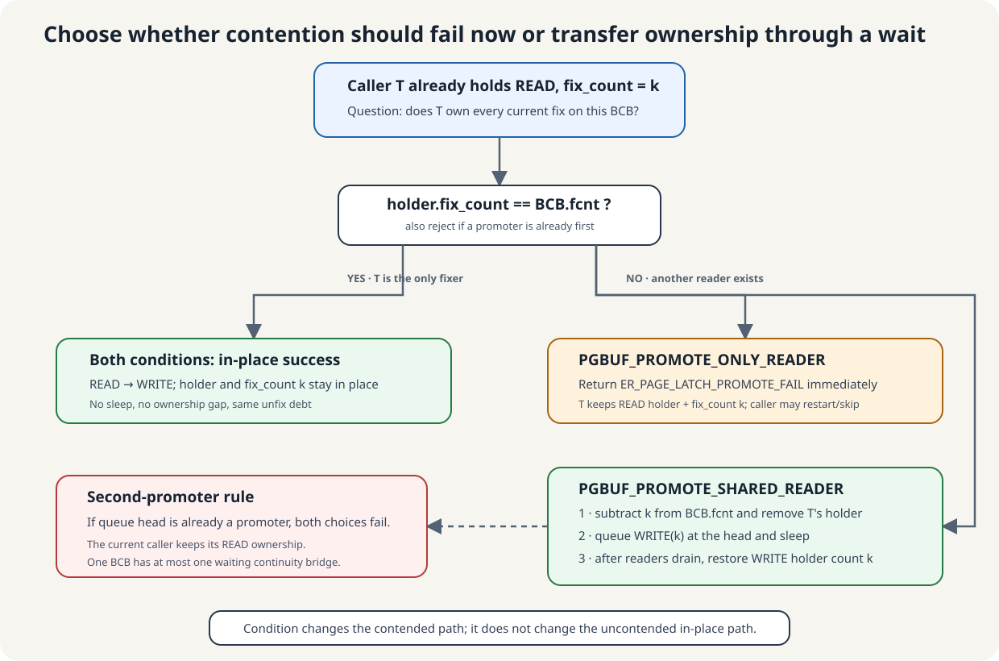

A READ holder asks for WRITE protection
Latch promotion is the attempt to change the current thread’s protection on one resident page from READ to WRITE. The goal is to avoid a full caller-written unfix/refix sequence when the page-buffer protocol can upgrade safely.
Promotion does not grant transaction-level ownership, preserve a B-tree search result by magic, or create another logical fix. It reorganizes the same page-buffer ownership under stronger byte protection.
Another WRITE fix and promotion are different operations

The ending latch mode may match, but the caller's debt, wait position, and failure contract do not.
Suppose T already holds the page twice under READ. Calling pgbuf_fix(..., WRITE, ...) means “acquire it once more”: success changes T's holder count from 2 to 3, and T owes three unfixes. Calling pgbuf_promote_read_latch() means “strengthen what I already own”: success keeps the count at 2, and T still owes two unfixes.
The blocking paths differ too. General fix carries old_count + 1 and joins the ordinary queue tail. Dedicated promotion carries old_count, uses the promoter position at the queue head, and lets the caller choose PGBUF_PROMOTE_ONLY_READER or PGBUF_PROMOTE_SHARED_READER. Its PAGE_PTR * argument can be nulled after a failed blocking path, which tells the caller that the old pointer lifetime ended.
fcnt=1 and then increments the existing holder. Starting from holder count 2 appears to leave global count 1 and holder count 3. Track this as candidate VS-18; do not treat that branch as a verified safe substitute for the dedicated API.Verified mechanism: ordinary nested WRITE handling is pinned page_buffer.c:6277–6634; dedicated promotion is 2842–3050.
ONLY_READER fails in place; SHARED_READER may transfer and wait

When this thread owns every current fix, both conditions do exactly the same thing: change READ to WRITE in place and preserve its holder count. The difference appears only when another reader exists.
| Starting state | PGBUF_PROMOTE_ONLY_READER | PGBUF_PROMOTE_SHARED_READER |
|---|---|---|
| This thread owns all fixes | Promote in place; same pointer and debt. | The same in-place result. |
| Another reader; no promoter waiting | Return ER_PAGE_LATCH_PROMOTE_FAIL. Keep READ ownership, pointer, and debt. | Subtract this thread's k fixes, remove its holder, queue WRITE(k) at the head, and sleep. Successful grant restores a WRITE holder with count k. |
| A promoter is already first | Reject the second promotion and keep READ ownership. | The same rejection; only one continuity-preserving promoter may wait. |
Choose ONLY_READER when blocking while related pages are held could create a multi-page latch cycle and the caller can restart or skip. Choose SHARED_READER when waiting is acceptable and successful queue-head handoff must preserve the inspected page state. The condition selects contended behavior, not the fast path.
Verified mechanism: condition definition is at page_buffer.h:205–209; only-owner test, conditional failure, ownership subtraction, and blocking transfer are at page_buffer.c:2905–3030.
Start optimistic under READ; pay for WRITE only when structure must change
The B-tree insertion source states the strategy directly. Non-leaf traversal normally assumes that no structural change is required and uses READ latches. Only after inspecting a node can it know that maximum-key metadata must change or a split is required. At that point it needs WRITE on the same already-fixed page.
Promotion matches that transition: keep the same logical fix debt when uncontended, or make contention an explicit outcome that the access method can handle. A nested WRITE fix would mean a second acquisition, would add another unfix obligation, and—if it waited—would use the ordinary queue path while the B-tree may still hold related pages. It does not express “upgrade this existing traversal ownership.”
| B-tree situation | Chosen policy | Reason visible in source |
|---|---|---|
| Non-leaf node probably unchanged | Traverse with READ first. | Avoid exclusive latches on the common no-change path. |
| Split or max-key update discovered | Promote the already-fixed page. | Mutation now needs WRITE without inventing a second logical fix. |
| Current page while related pages are held | Use PGBUF_PROMOTE_ONLY_READER. | Fail/restart instead of waiting in a multi-page latch cycle; the source gives a three-thread dead-latch example. |
| Promotion cannot preserve the optimistic path | Restart traversal with WRITE latches. | The exceptional retry guarantees progress without repeating optimistic failure indefinitely. |
| Leaf likely to change | Fix WRITE directly. | The source says promotion can perform poorly when change is expected almost every time. |
So “promotion is cheaper when there is no contention” is partly right, but incomplete. Its decisive value is semantic: preserve existing debt and observations, provide promotion-specific refusal/blocking policy, and let B-tree restart safely when the optimistic READ path cannot be promoted.
Caller-owned rationale: the insertion design comment and split path are pinned btree.c:28307–28393 and 28638–28696. The delete/merge path applies the same optimistic READ, conditional promotion, skip-or-restart policy at 31672–31866.
Blocking success has an internal gap but a protected handoff

The caller's holder disappears while waiting, but head priority prevents a writer or victim from interleaving before successful grant.
| Outcome | Ownership transition | Old observations? |
|---|---|---|
| In-place success | Caller is the only fixer; latch becomes WRITE without release. | Remain continuously protected, subject to caller invariants. |
| Conditional failure | READ ownership and debt remain unchanged. | Still protected by READ, but caller chooses whether algorithmically to restart. |
| Blocking success | Caller’s fixes leave global fcnt; the same count waits at the head and returns in a new WRITE holder. | Preserved: active owners were readers and queued writers could not pass the promoter. |
| Blocking failure or interrupt | After surrendering ownership, returns with null page pointer and no restored debt. | Cannot be used or unfixed; restart from a valid acquisition. |
VS-11 concerns holder-allocation failure after a latch/fix grant. It does not fit the clean hard-blocking-failure row above; fault injection is still required to determine what state survives. Do not infer rollback merely from a null return.“Am I the only fixer?” determines the easy path
- If this holder’s nested
fix_countequals the BCB’s globalfcnt, every fix belongs to this thread. Unless a promoter is already waiting, promotion can change the latch mode in place. - If other readers exist and the caller requested
PGBUF_PROMOTE_ONLY_READER, promotion fails conditionally without releasing READ ownership. - If another promoter is already first in the queue, the new promotion also fails conditionally; at most one promoter waits on a BCB.
- Otherwise the shared-reader path releases this thread’s fixes, removes its holder, inserts the promoter at the queue head, and waits for WRITE.
Verified mechanism: pinned promotion is page_buffer.c:2842–3050.
The saved fix count moves as one ownership debt
Suppose the caller has nested-fix count 2. Blocking promotion:
- subtracts 2 from the BCB’s global
fcnt, - removes this thread’s READ holder,
- stores requested fix count 2 with the queued promotion request, then
- on grant, restores 2 into the global tuple and creates a new WRITE holder with count 2.
Before and after successful promotion, the caller owes two releases—not four. Internally it owns no holder while waiting, but successful head handoff returns the same protected page state.
Why a successful promoter may use its READ-side observations
The continuity argument is structural:
- the promoter is inserted at the BCB queue head while the BCB mutex is still held,
- the remaining active owners hold READ and cannot legally mutate the page,
- ordinary writers and new non-holder readers stay behind the promoter,
- the last reader's zero-crossing grants the head WRITE promoter without an idle/victim gap, and
- the single-promoter rule prevents a second upgrader from changing the page first.
B-tree relies on this guarantee: it obtains node_header, computes need_split and max_key_len, calls shared-reader promotion, then uses those same values after success. It does not re-search merely because promotion blocked.
*pgptr_p becomes null and the previous pointer lifetime is over. Successful return and failed return have deliberately different contracts.Continue after success; restart or skip after the selected failure
The Module preserves page state for a successful first promoter. B-tree therefore continues the mutation using its READ-side decision. If PGBUF_PROMOTE_ONLY_READER fails or another promoter already exists, B-tree chooses whether to skip an optional merge or restart traversal with WRITE latches.
A hard failure after the holder was surrendered is different: the null pointer means there is no page to continue with or unfix. The caller must enter its error/restart path. This outcome separation—not blanket revalidation after success—is the contract to audit.
Representative caller evidence: pinned B-tree restart points are btree.c:28365–28393 and 28638–28696.
Prove the continuity bridge
Prompt
Thread T holds two nested READ fixes, locates slot 7, and computes an insertion decision. Another reader holds the page. T requests blocking promotion to WRITE.
Your task: trace both debt ledgers; prove why queued writers cannot change slot 7 before successful grant; explain why B-tree may continue using the decision; then contrast conditional failure and hard blocking failure.
Paste your answer into the chat. I will check debt conservation, queue-head continuity, outcome classification, and caller responsibility before recording Advanced progress.
Mark the exact point where continuity is preserved or lost
Read pinned page_buffer.c:2842–3050. Annotate only-fixer detection, conditional exits that retain READ, fix-count subtraction, promoter head insertion, protected wakeup, same-count holder recording, and the hard-failure pointer nulling.